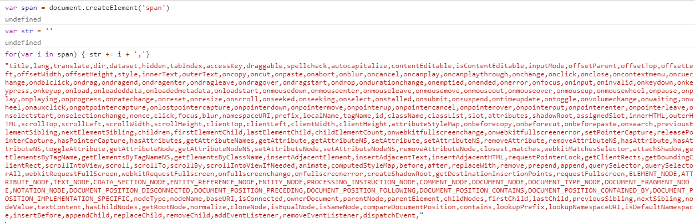

继上一节内容，我们将
Vue复杂的挂载流程通过图解流程，代码分析的方式简单梳理了一遍，最后也讲到了模板编译的大致流程。然而在挂载的核心处，我们并没有分析模板编译后渲染函数是如何转换为可视化DOM节点的。因此这一章节，我们将重新回到Vue实例挂载的最后一个环节：渲染DOM节点。在渲染真实DOM的过程中，Vue引进了虚拟DOM的概念，这是Vue架构设计中另一个重要的理念。虚拟DOM作为JS对象和真实DOM中间的一个缓冲层，对JS频繁操作DOM的引起的性能问题有很好的缓解作用。
4.1 Virtual DOM§
4.1.1 浏览器的渲染流程§
当浏览器接收到一个Html文件时，JS引擎和浏览器的渲染引擎便开始工作了。从渲染引擎的角度，它首先会将html文件解析成一个DOM树，与此同时，浏览器将识别并加载CSS样式，并和DOM树一起合并为一个渲染树。有了渲染树后，渲染引擎将计算所有元素的位置信息，最后通过绘制，在屏幕上打印最终的内容。JS引擎和渲染引擎虽然是两个独立的线程，但是JS引擎却可以触发渲染引擎工作，当我们通过脚本去修改元素位置或外观时，JS引擎会利用DOM相关的API方法去操作DOM对象,此时渲染引擎变开始工作，渲染引擎会触发回流或者重绘。下面是回流重绘的两个概念：
- 回流： 当我们对
DOM的修改引发了元素尺寸的变化时，浏览器需要重新计算元素的大小和位置，最后将重新计算的结果绘制出来，这个过程称为回流。 - 重绘： 当我们对
DOM的修改只单纯改变元素的颜色时，浏览器此时并不需要重新计算元素的大小和位置，而只要重新绘制新样式。这个过程称为重绘。
很显然回流比重绘更加耗费性能。
通过了解浏览器基本的渲染机制，我们很容易联想到当不断的通过JS修改DOM时，不经意间会触发到渲染引擎的回流或者重绘，这个性能开销是非常巨大的。因此为了降低开销，我们需要做的是尽可能减少DOM操作。有什么方法可以做到呢？
4.1.2 缓冲层-虚拟DOM§
虚拟DOM是为了解决频繁操作DOM引发性能问题的产物。虚拟DOM(下面称为Virtual DOM)是将页面的状态抽象为JS对象的形式，本质上是JS和真实DOM的中间层，当我们想用JS脚本大批量进行DOM操作时，会优先作用于Virtual DOM这个JS对象，最后通过对比将要改动的部分通知并更新到真实的DOM。尽管最终还是操作真实的DOM，但Virtual DOM可以将多个改动合并成一个批量的操作，从而减少 DOM 重排的次数，进而缩短了生成渲染树和绘制所花的时间。
我们看一个真实的DOM包含了什么：

浏览器将一个真实DOM设计得很复杂，不仅包含了自身的属性描述，大小位置等定义，也囊括了DOM拥有的浏览器事件等。正因为如此复杂的结构，我们频繁去操作DOM或多或少会带来浏览器的性能问题。而作为数据和真实DOM之间的一层缓冲，Virtual DOM 只是用来映射到真实DOM的渲染，因此不需要包含操作 DOM 的方法，它只要在对象中重点关注几个属性即可。
// 真实DOM
<div id="real"><span>dom</span></div>
// 真实DOM对应的JS对象
{
tag: 'div',
data: {
id: 'real'
},
children: [{
tag: 'span',
children: 'dom'
}]
}
4.2 Vnode§
Vue在渲染机制的优化上，同样引进了virtual dom的概念，它是用Vnode这个构造函数去描述一个DOM节点。
4.2.1 Vnode构造函数§
var VNode = function VNode (tag,data,children,text,elm,context,componentOptions,asyncFactory) {
this.tag = tag; // 标签
this.data = data; // 数据
this.children = children; // 子节点
this.text = text;
···
···
};
Vnode定义的属性差不多有20几个，显然用Vnode对象要比真实DOM对象描述的内容要简单得多，它只用来单纯描述节点的关键属性，例如标签名，数据，子节点等。并没有保留跟浏览器相关的DOM方法。除此之外，Vnode也会有其他的属性用来扩展Vue的灵活性。
源码中也定义了创建Vnode的相关方法。
4.2.2 创建Vnode注释节点§
// 创建注释vnode节点
var createEmptyVNode = function (text) {
if ( text === void 0 ) text = '';
var node = new VNode();
node.text = text;
node.isComment = true; // 标记注释节点
return node
};
4.2.3 创建Vnode文本节点§
// 创建文本vnode节点
function createTextVNode (val) {
return new VNode(undefined, undefined, undefined, String(val))
}
4.2.4 克隆vnode§
function cloneVNode (vnode) {
var cloned = new VNode(
vnode.tag,
vnode.data,
vnode.children && vnode.children.slice(),
vnode.text,
vnode.elm,
vnode.context,
vnode.componentOptions,
vnode.asyncFactory
);
cloned.ns = vnode.ns;
cloned.isStatic = vnode.isStatic;
cloned.key = vnode.key;
cloned.isComment = vnode.isComment;
cloned.fnContext = vnode.fnContext;
cloned.fnOptions = vnode.fnOptions;
cloned.fnScopeId = vnode.fnScopeId;
cloned.asyncMeta = vnode.asyncMeta;
cloned.isCloned = true;
return cloned
}
注意：cloneVnode对Vnode的克隆只是一层浅拷贝，它不会对子节点进行深度克隆。
4.3 Virtual DOM的创建§
先简单回顾一下挂载的流程，挂载的过程是调用Vue实例上$mount方法，而$mount的核心是mountComponent函数。如果我们传递的是template模板，模板会先经过编译器的解析，并最终根据不同平台生成对应代码，此时对应的就是将with语句封装好的render函数;如果传递的是render函数，则跳过模板编译过程，直接进入下一个阶段。下一阶段是拿到render函数，调用vm._render()方法将render函数转化为Virtual DOM，并最终通过vm._update()方法将Virtual DOM渲染为真实的DOM节点。
Vue.prototype.$mount = function(el, hydrating) {
···
return mountComponent(this, el)
}
function mountComponent() {
···
updateComponent = function () {
vm._update(vm._render(), hydrating);
};
}
我们先看看vm._render()方法是如何将render函数转化为Virtual DOM的。
回顾一下第一章节内容，文章介绍了Vue在代码引入时会定义很多属性和方法，其中有一个renderMixin过程，我们之前只提到了它会定义跟渲染有关的函数，实际上它只定义了两个重要的方法，_render函数就是其中一个。
// 引入Vue时，执行renderMixin方法，该方法定义了Vue原型上的几个方法，其中一个便是 _render函数
renderMixin();//
function renderMixin() {
Vue.prototype._render = function() {
var ref = vm.$options;
var render = ref.render;
···
try {
vnode = render.call(vm._renderProxy, vm.$createElement);
} catch (e) {
···
}
···
return vnode
}
}
抛开其他代码，_render函数的核心是render.call(vm._renderProxy, vm.$createElement)部分，vm._renderProxy在数据代理分析过，本质上是为了做数据过滤检测，它也绑定了render函数执行时的this指向。vm.$createElement方法会作为render函数的参数传入。回忆一下，在手写render函数时，我们会利用render函数的第一个参数createElement进行渲染函数的编写，这里的createElement参数就是定义好的$createElement方法。
new Vue({
el: '#app',
render: function(createElement) {
return createElement('div', {}, this.message)
},
data() {
return {
message: 'dom'
}
}
})
初始化_init时，有一个initRender函数，它就是用来定义渲染函数方法的，其中就有vm.$createElement方法的定义，除了$createElement，_c方法的定义也类似。其中 vm._c 是template内部编译成render函数时调用的方法，vm.$createElement是手写render函数时调用的方法。两者的唯一区别仅仅是最后一个参数的不同。通过模板生成的render方法可以保证子节点都是Vnode，而手写的render需要一些检验和转换。
function initRender(vm) {
vm._c = function(a, b, c, d) { return createElement(vm, a, b, c, d, false); }
vm.$createElement = function (a, b, c, d) { return createElement(vm, a, b, c, d, true); };
}
createElement 方法实际上是对 _createElement 方法的封装，在调用_createElement前，它会先对传入的参数进行处理，毕竟手写的render函数参数规格不统一。举一个简单的例子。
// 没有data
new Vue({
el: '#app',
render: function(createElement) {
return createElement('div', this.message)
},
data() {
return {
message: 'dom'
}
}
})
// 有data
new Vue({
el: '#app',
render: function(createElement) {
return createElement('div', {}, this.message)
},
data() {
return {
message: 'dom'
}
}
})
这里如果第二个参数是变量或者数组，则默认是没有传递data,因为data一般是对象形式存在。
function createElement (
context, // vm 实例
tag, // 标签
data, // 节点相关数据，属性
children, // 子节点
normalizationType,
alwaysNormalize // 区分内部编译生成的render还是手写render
) {
// 对传入参数做处理，如果没有data，则将第三个参数作为第四个参数使用，往上类推。
if (Array.isArray(data) || isPrimitive(data)) {
normalizationType = children;
children = data;
data = undefined;
}
// 根据是alwaysNormalize 区分是内部编译使用的，还是用户手写render使用的
if (isTrue(alwaysNormalize)) {
normalizationType = ALWAYS_NORMALIZE;
}
return _createElement(context, tag, data, children, normalizationType) // 真正生成Vnode的方法
}
4.3.1 数据规范检测§
Vue既然暴露给用户用render函数去手写渲染模板，就需要考虑用户操作带来的不确定性，因此_createElement在创建Vnode前会先数据的规范性进行检测，将不合法的数据类型错误提前暴露给用户。接下来将列举几个在实际场景中容易犯的错误，也方便我们理解源码中对这类错误的处理。
- 用响应式对象做
data属性
new Vue({
el: '#app',
render: function (createElement, context) {
return createElement('div', this.observeData, this.show)
},
data() {
return {
show: 'dom',
observeData: {
attr: {
id: 'test'
}
}
}
}
})
- 当特殊属性key的值为非字符串，非数字类型时
new Vue({
el: '#app',
render: function(createElement) {
return createElement('div', { key: this.lists }, this.lists.map(l => {
return createElement('span', l.name)
}))
},
data() {
return {
lists: [{
name: '111'
},
{
name: '222'
}
],
}
}
})
这些规范都会在创建Vnode节点之前发现并报错，源代码如下：
function _createElement (context,tag,data,children,normalizationType) {
// 1. 数据对象不能是定义在Vue data属性中的响应式数据。
if (isDef(data) && isDef((data).__ob__)) {
warn(
"Avoid using observed data object as vnode data: " + (JSON.stringify(data)) + "\n" +
'Always create fresh vnode data objects in each render!',
context
);
return createEmptyVNode() // 返回注释节点
}
if (isDef(data) && isDef(data.is)) {
tag = data.is;
}
if (!tag) {
// 防止动态组件 :is 属性设置为false时，需要做特殊处理
return createEmptyVNode()
}
// 2. key值只能为string，number这些原始数据类型
if (isDef(data) && isDef(data.key) && !isPrimitive(data.key)
) {
{
warn(
'Avoid using non-primitive value as key, ' +
'use string/number value instead.',
context
);
}
}
···
}
这些规范性检测保证了后续Virtual DOM tree的完整生成。
4.3.2 子节点children规范化§
Virtual DOM tree是由每个Vnode以树状形式拼成的虚拟DOM树，我们在转换真实节点时需要的就是这样一个完整的Virtual DOM tree，因此我们需要保证每一个子节点都是Vnode类型,这里分两种场景分析。
- 模板编译
render函数，理论上template模板通过编译生成的render函数都是Vnode类型，但是有一个例外，函数式组件返回的是一个数组(这个特殊例子，可以看函数式组件的文章分析),这个时候Vue的处理是将整个children拍平成一维数组。 - 用户定义
render函数，这个时候又分为两种情况，一个是当chidren为文本节点时，这时候通过前面介绍的createTextVNode创建一个文本节点的VNode; 另一种相对复杂，当children中有v-for的时候会出现嵌套数组，这时候的处理逻辑是，遍历children，对每个节点进行判断，如果依旧是数组，则继续递归调用，直到类型为基础类型时，调用createTextVnode方法转化为Vnode。这样经过递归，children也变成了一个类型为Vnode的数组。
function _createElement() {
···
if (normalizationType === ALWAYS_NORMALIZE) {
// 用户定义render函数
children = normalizeChildren(children);
} else if (normalizationType === SIMPLE_NORMALIZE) {
// 模板编译生成的的render函数
children = simpleNormalizeChildren(children);
}
}
// 处理编译生成的render 函数
function simpleNormalizeChildren (children) {
for (var i = 0; i < children.length; i++) {
// 子节点为数组时，进行开平操作，压成一维数组。
if (Array.isArray(children[i])) {
return Array.prototype.concat.apply([], children)
}
}
return children
}
// 处理用户定义的render函数
function normalizeChildren (children) {
// 递归调用，直到子节点是基础类型，则调用创建文本节点Vnode
return isPrimitive(children)
? [createTextVNode(children)]
: Array.isArray(children)
? normalizeArrayChildren(children)
: undefined
}
// 判断是否基础类型
function isPrimitive (value) {
return (
typeof value === 'string' ||
typeof value === 'number' ||
typeof value === 'symbol' ||
typeof value === 'boolean'
)
}
4.3.4 实际场景§
在数据检测和组件规范化后，接下来通过new VNode()便可以生成一棵完整的VNode树，注意在_render过程中会遇到子组件，这个时候会优先去做子组件的初始化，这部分放到组件环节专门分析。我们用一个实际的例子，结束render函数到Virtual DOM的分析。
template模板形式
var vm = new Vue({
el: '#app',
template: '<div><span>virtual dom</span></div>'
})
- 模板编译生成
render函数
(function() {
with(this){
return _c('div',[_c('span',[_v("virual dom")])])
}
})
Virtual DOM tree的结果(省略版)
{
tag: 'div',
children: [{
tag: 'span',
children: [{
tag: undefined,
text: 'virtual dom'
}]
}]
}
4.4 虚拟Vnode映射成真实DOM§
回到 updateComponent的最后一个过程,虚拟的DOM树在生成virtual dom后，会调用Vue原型上_update方法，将虚拟DOM映射成为真实的DOM。从源码上可以知道，_update的调用时机有两个，一个是发生在初次渲染阶段，另一个发生数据更新阶段。
updateComponent = function () {
// render生成虚拟DOM，update渲染真实DOM
vm._update(vm._render(), hydrating);
};
vm._update方法的定义在lifecycleMixin中。
lifecycleMixin()
function lifecycleMixin() {
Vue.prototype._update = function (vnode, hydrating) {
var vm = this;
var prevEl = vm.$el;
var prevVnode = vm._vnode; // prevVnode为旧vnode节点
// 通过是否有旧节点判断是初次渲染还是数据更新
if (!prevVnode) {
// 初次渲染
vm.$el = vm.__patch__(vm.$el, vnode, hydrating, false)
} else {
// 数据更新
vm.$el = vm.__patch__(prevVnode, vnode);
}
}
_update的核心是__patch__方法，如果是服务端渲染，由于没有DOM，_patch方法是一个空函数，在有DOM对象的浏览器环境下，__patch__是patch函数的引用。
// 浏览器端才有DOM，服务端没有dom，所以patch为一个空函数
Vue.prototype.__patch__ = inBrowser ? patch : noop;
而patch方法又是createPatchFunction方法的返回值，createPatchFunction方法传递一个对象作为参数，对象拥有两个属性，nodeOps和modules，nodeOps封装了一系列操作原生DOM对象的方法。而modules定义了模块的钩子函数。
var patch = createPatchFunction({ nodeOps: nodeOps, modules: modules });
// 将操作dom对象的方法合集做冻结操作
var nodeOps = /*#__PURE__*/Object.freeze({
createElement: createElement$1,
createElementNS: createElementNS,
createTextNode: createTextNode,
createComment: createComment,
insertBefore: insertBefore,
removeChild: removeChild,
appendChild: appendChild,
parentNode: parentNode,
nextSibling: nextSibling,
tagName: tagName,
setTextContent: setTextContent,
setStyleScope: setStyleScope
});
// 定义了模块的钩子函数
var platformModules = [
attrs,
klass,
events,
domProps,
style,
transition
];
var modules = platformModules.concat(baseModules);
真正的createPatchFunction函数有一千多行代码，这里就不方便列举出来了，它的内部首先定义了一系列辅助的方法，而核心是通过调用createElm方法进行dom操作，创建节点，插入子节点，递归创建一个完整的DOM树并插入到Body中。并且在产生真实阶段阶段，会有diff算法来判断前后Vnode的差异，以求最小化改变真实阶段。后面会有一个章节的内容去讲解diff算法。createPatchFunction的过程只需要先记住一些结论，函数内部会调用封装好的DOM api，根据Virtual DOM的结果去生成真实的节点。其中如果遇到组件Vnode时，会递归调用子组件的挂载过程，这个过程我们也会放到后面章节去分析。
4.5 小结§
这一节分析了mountComponent的两个核心方法，render和update,在分析前重点介绍了存在于JS操作和DOM渲染的桥梁：Virtual DOM。JS对DOM节点的批量操作会先直接反应到Virtual DOM这个描述对象上,最终的结果才会直接作用到真实节点上。可以说，Virtual DOM很大程度提高了渲染的性能。文章重点介绍了render函数转换成Virtual DOM的过程，并大致描述了_update函数的实现思路。其实这两个过程都牵扯到组件，所以这一节对很多环节都无法深入分析，下一节开始会进入组件的专题。我相信分析完组件后，读者会对整个渲染过程会有更深刻的理解和思考。